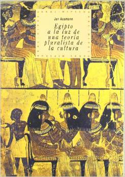

Egipto a la luz de una teoria pluralista de la cultura
Reseña por Jorge I. Zuluaga

Ver reseña en GoodReads (necesita cuenta)
Efectivamente, se trata de un libro corto; o más bien, es una colección de 3 ensayos encuadernados como un libro. Por la misma razón es fácil de leer de una sola sentada. Bueno, al menos si leen como hago yo las primeras lecturas de los libros, sin una dedicación muy exhaustiva a tomar notas o a buscar cada referencia en Internet.
Es cierto que hay que tener un bagaje previo en el mundo de la Egiptología. No es un texto divulgativo, ni una presentación muy general de la historia del antiguo Egipto o de su religión. Pero si tienes una idea básica de ambas es realmente asombroso.
Los ensayos hacen un recorrido por los 3 grandes períodos en los que se divide normalmente la Historia del antiguo Egipto, Imperio Antiguo (en la nomenclatura de J. Assmann, su autor), Imperio Medio e Imperio Nuevo, revisando en cada etapa la evolución de la institución faraónica y la relación de esa institución, pero también del pueblo egipcio en general, con la religión. Todo, a partir de lo que las evidencias escritas en pirámides, tumbas, papiros y óstracos, han terminado por revelar.
Si bien no puede asumirse que las conclusiones a las que llega Assmann en este conjunto de ensayos sean compartidas por toda la comunidad egiptológica, las ideas que expresa aquí fueron para mi reveladoras. En particular, me sorprendieron –y tal vez sea por mi ignorancia, soy un recién llegado a la disciplina– las causas que atribuye a la caída del Reino Antiguo –en la nomenclatura que prefiero usar– y la era de confusión que llamamos primer período intermedio.
Muy interesante también el análisis que hace Assmann de la evolución que tuvo a lo largo de la historia del Egipto faraónico, la relación del regente con el pueblo y los dioses. Dice Assmann que al principio –Reino Antiguo– el faraón era dios en la Tierra, Horus, dueño de toda ella y garante de la Ma'at (el orden cósmico). Durante el Reino Medio, en cambio, el faraón adopta la figura de Hijo de Ra, que garantiza la protección de su pueblo a través de acciones políticas y administrativas concretas. Ya en el Reino Nuevo, el faraón pasa a cumplir funciones más amplias que incluyen la protección contra los pueblos que rodean a Egipto o la conquista de nuevos territorios.
La relación con los dioses y la religiosidad también cambia a través de la Historia. Este es un tema para mí muy importante porque siempre he sentido que la religión egipcia se describe con una simpleza que desconoce el peso de 3 milenios de historia. No es posible, es mi intuición, que podamos describir los mitos y dioses del Egipto faraónico, como si no hubieran cambiado en el lapso de 30 dinastías. Así que cuando me encuentro con escritos como los de Assmann en los que se reconoce que la relación con los dioses, y la función misma de esos dioses, evolucionó a lo largo del tiempo, siento que mi intuición es confirmada.
Con cada cosa que leo sobre el antiguo Egipto y sobre su religión milenaria, más reconozco la influencia que tuvo sobre la tradición cristiana en la que nací. En las páginas de estos ensayos seguro personas que han crecido en esta tradición se identificaran fácilmente con las creencias, por ejemplo, de un dios personal, uno que vive en tu corazón y no en los templos o en los cielos, que fue común durante el Reino Nuevo. O la idea de que solo los dioses determinan lo que pasará mañana y que nada está predeterminado, es también una muestra de lo mucho que pudo la religión egipcia influir en las tradiciones religiosas posteriores.
Una cosa no me gusto. El masculino genérico de todo el texto y que se reproduce con obstinación en la traducción de Akal que leí. Yo estoy dispuesto a aceptar que por muchos años haya sido la regla lingüística sin discusión referirnos al "hombre", "los hombres", "un hombre" como una forma de referirse a la totalidad de las personas egipcias, pero creo que ya en los años noventas, cuando fue escrito este libro, había pasado suficiente agua debajo del puente de la exclusión sistemática de las mujeres, como para entender que esto no se lee bien.
En fin. Para la persona aficionada, para la persona estudiosa del antiguo Egipto, su historia política, cultural y religiosa, esta es una valiosa colección de ensayos.